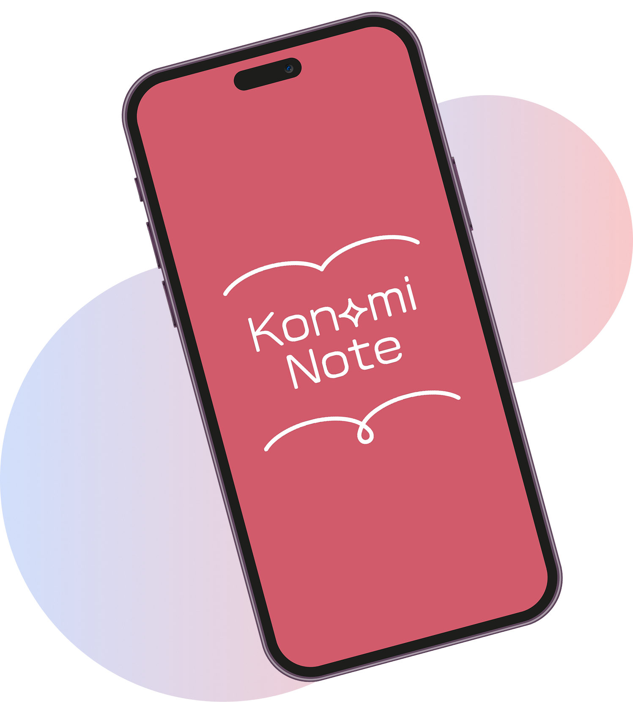
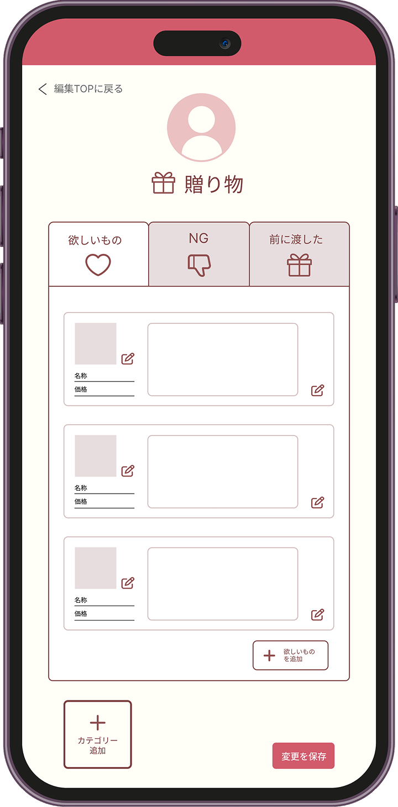
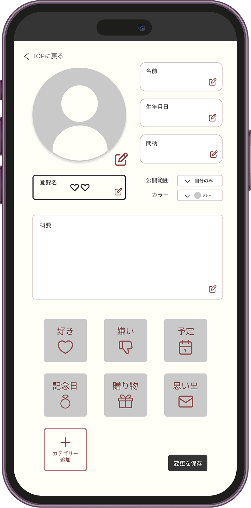
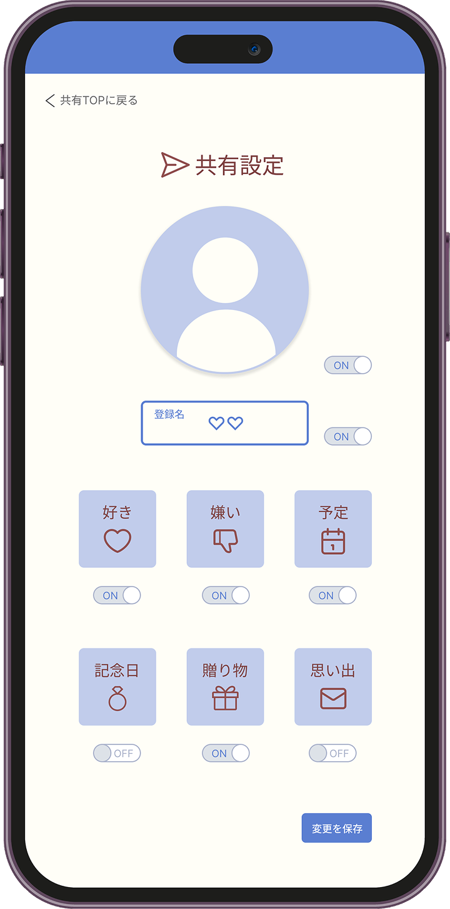

交換ノートを、もう一度、デジタルで。
大切にしたい。
でも、相手の「本当に欲しいもの」や「そっと避けたいNG」は、SNSのタイムラインやDMの奥に埋もれてしまいがちです。
Konomiノートは、そんな大切な「好き」と「NG」の情報をトレンド感あふれるノートのように美しく、そして安全に一括で管理するパーソナルノートアプリです。
プレゼント選びや日常のコミュニケーションにおける迷いや失敗を劇的に減らし、大切な人との関係を一歩先の「成功」へと導きます。
「可愛い」と「役立つ」を両立させた新しいコミュニケーションのカタチを、今すぐ始めましょう。

もうプレゼント選びで
失敗しない！
『欲しいもの・NGリスト機能』
相手が本当に欲しいものや、過去に失敗した贈り物、苦手なものをリスト化。ギフトにまつわる悩みや重複を根本から解消します。
推し活が100倍深く、
整理される！
『テーマ別・カテゴリ整理機能』
推しの好きな食物、ブランド、過去の言動まで、情報がSNSに埋もれることなくカテゴリ別に整理可能。愛を深める情報管理ツールとして機能します。


自分の情報を
みんなに公開！
『公開用パーソナルページ機能』
自分の好みやNGを記録したノートを、Webページとして簡単に発行・シェアできます。フォロワーや友人に自分のパーソナリティを深く伝え、エンゲージメントを高めます。

ずっと仲が良い友達でも、実は苦手な食べ物や、今本当に欲しがっているものって聞きづらいですよね。アプリで相互共有を始めたら、友達が「実はパクチーが苦手」と書いてあるのを発見！次のお店選びでさりげなく避けることができ、とても喜ばれました。
（20歳・学生）
自分の「好き」と「NG」を公開ページにしてSNSに貼ってみました。そしたら、イベントでの差し入れが全部自分の欲しかったものや、大好きなものばかりに！ファンの方からも「何を贈ればいいか迷わなくて済むから助かる」と言ってもらえました。
（21歳・モデル）
雑誌のインタビューやSNS、動画配信など、推しの情報はあちこちに散らばっていて、いざという時に思い出せないのが悩みでした。このアプリで「好きな色」「愛用香水」「印象的な発言」をカテゴリ分けして整理したら、自分だけの『最強の推し名鑑』が完成！推し活のQOLが爆上がりです。
（24歳・フリーランス）
誕生日や記念日、いつも「何でもいいよ」と言われて困っていました。Konami Noteに、普段の会話で出てきた「これ可愛い」「あのブランド気になる」をメモするようにしたら、プレゼント選びが本当にラクに。相手も「覚えててくれたんだ！」と驚いてくれて、二人の時間がより楽しくなりました。
（29歳・会社員）
登録した情報は他の人に勝手には見られませんか？
ご安心ください。登録したノートの内容は、デフォルトでは「自分のみ」に設定されています。共有機能を使って、許可した相手以外に情報が公開されることは一切ありません。
「公開ページ」には、どの範囲の情報が載りますか？
公開ページに載せる項目は、ノートの中から一つひとつ自分で選ぶことができます。例えば「好きなブランド」だけを公開し、「本音のNG」は非公開にするなど、細かな設定が可能です。
機種変更をした場合、データは引き継げますか？
アカウントを作成（メールアドレスやSNS連携）していただくことで、別の端末でもログインするだけで全てのデータをそのまま引き継ぐことが可能です。